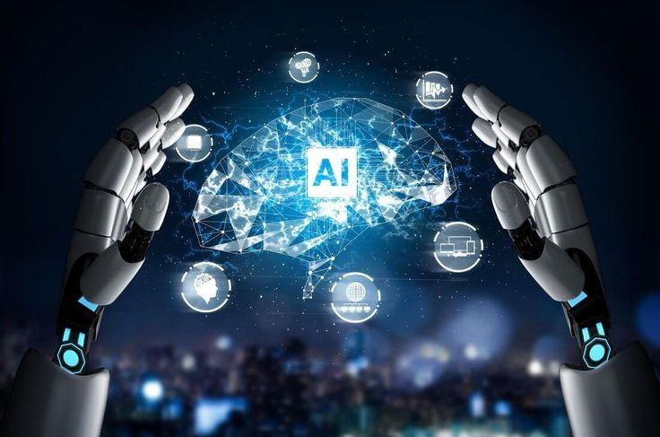

Welcome, this is a page that highlights the challenges that IT professionals are facing.
Cloud Migration - both big and small businesses are opting to cloud storages as they are more secure, robust, and scalable, this change requires it professionals to quickly adapt to using cloud services. In simple ADAPTION is the name of the game.
Cybersecurity threats - IT professionals are now challange to develop systems that are secure, robust and fault tolerant to secure user data. The more robust the system the more the cyber-attacks get advanced, so basic security wont cut it.
Fast evolution of software - Software is forever evolving, new concepts are introduced daily, dependencies are always being upgraged and code is shortened everytime. The big question is, will the same software we develop today work tomorrow?
Skills Gap - The demand for skilled IT professionals is high as the tech space is fast paced, but there is a talent shortage in the industry. Therefore, IT professionals must develop strategies for attracting and retaining talent and investing in training and development programs.